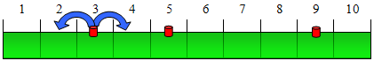

| E. Water Restrictions |
Due to the current water restrictions, the government has forbidden to waste more than C litres of water per house. The owner of a detached house must reduce his water consumption. He has a one-dimensional garden of length L, with N sprinklers located at fixed positions. Each sprinkler, i, has a maximum possible flow, m[i]; it can be programmed to work at any current flow between 0 and m[i]. If the current flow is set to c[i], then the sprinkler will irrigate between c[i] positions to its left and c[i] positions to its right.

A sample one-dimensional garden of length L = 10, and three sprinklers at
positions 3, 5 and 9. The first sprinkler is programmed to c[1]= 1.
In total, the sum of all c[i] can never be greater than C. The problem is to obtain the maximum amount of land which can be irrigated with these restrictions.
All parameters of the problem (length of the garden, position of the sprinklers, and flows) are integer values. Besides, all the sprinklers are situated inside the garden and at different positions.
The input begins with a line where the number of test cases (T) is indicated. The data for each test case appear in successive lines.
In each test case, the first line contains the size of the garden (L, with maximum value 20). The second line contains the number of sprinklers (S, with maximum value 10). The third line contains S integers separated by spaces, and each integer represents the position of a sprinkler. The fourth line contains the maximum total flow (C, with maximum value 10). And the fifth line contains S integers separated by spaces, where each integer represents the maximum possible flow of the corresponding sprinkler (m[i], with maximum value 5).
You can assume that, for each sprinkler, its maximum flow will never irrigate any position outside the garden.
The output consists of a line for each problem. For each problem you have to output the maximum land space which can be irrigated taking into consideration the water flow restrictions.
2 10 3 3 5 9 3 2 3 1 20 6 2 6 10 11 13 17 7 1 4 3 2 4 3
8 19